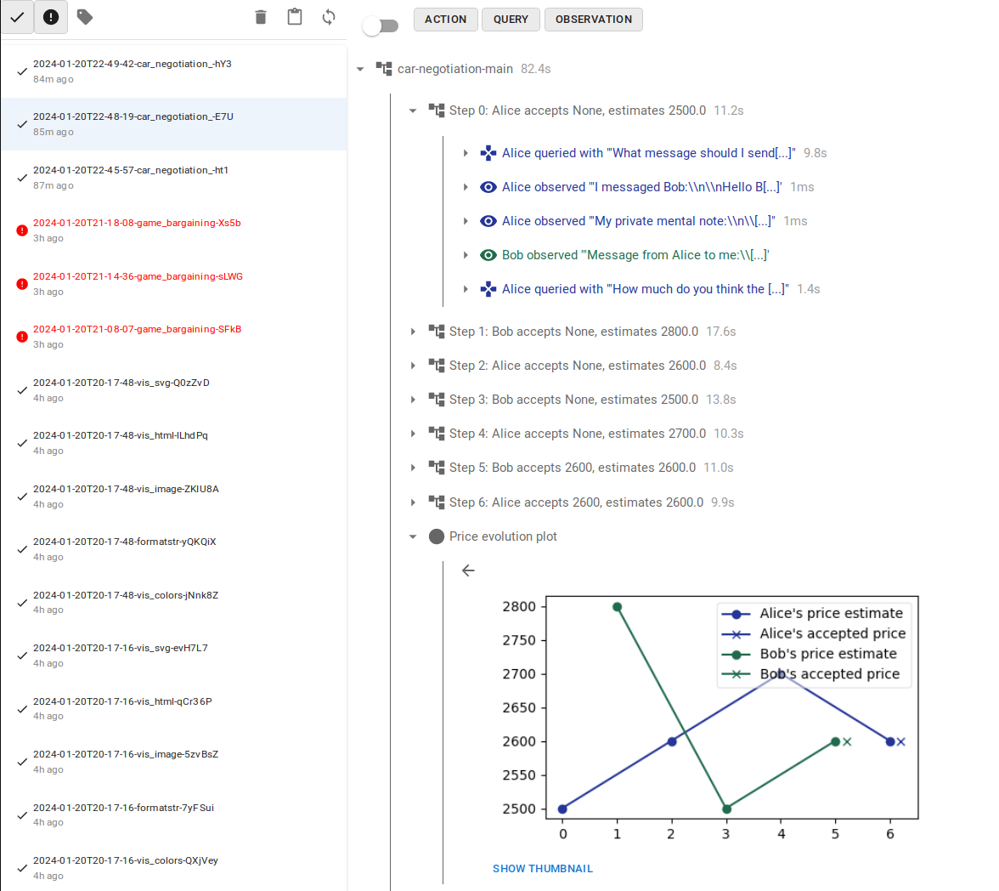

InterLab – a toolkit for experiments with multi-agent interactions
This post introduces InterLab, a toolkit for experiments with multi-agent interaction. We plan to release more posts on the overall project, technical details, design considerations, and concrete research projects and ideas over the next few weeks to months.
This post focuses on the motivation behind the project and touches upon more high-level considerations; if you want to jump to the implementation itself or want to start experimenting, you can jump directly to the Getting started section, to the InterLab GitHub repo with project overview and further links, or explore the example Google Colab notebook.
Motivation
The research agenda of ACS is primarily focused on understanding complex interactions of humans and AI agents, both on individual level and between systems or institutions, and both theoretically and empirically.
Future going well in our view depends not just on the narrow ability to point one AI system to some well specified goal, but broadly on a complex system composed of both AIs and humans to develop in a way which is conducive to human flourishing. This points to a somewhat different set of questions than traditional AI safety, including problems such as "how to deal with the misalignment between individual humans, or between humans and institutions?", "how to avoid AIs amplifying conflict?", "how will institutions running on AI cognition (rather than human cognition) work?", "how do aggregate multi-agent entities evolve?", or "what happens if you replace part of human-human interactions in the society with AI-AI interactions?".
While many of these questions likely require a better theoretical and conceptual understanding, it is also possible to study them empirically, using LLMs and LLM-based agents, which can also inform our models and intuitions.
-
We may build more comprehensive language model evaluations for near-term alignment, in particular in the direction of multi-agent evaluations—this is indeed one of the goals of InterLab.
-
We may learn about strategies for resolving conflicts and disagreements, and robust cooperation, as well as models of manipulation and coercion, in particular under information and power imbalances.
-
We may create new technologies for human coordination, cooperation and empowerment, such as negotiation aids or aids for solving internal conflicts in individual humans.
-
Multi-agent systems of humans and AIs come with a specific and understudied set of risks (longer report forthcoming).
-
Better empirical understanding of systems of interacting LLMs can help us better understand the space of intelligent systems occupied by collective intelligences and superagents.
-
There is some risk of over-updating our models and intuitions based on the current AI systems that needs to be taken into account, but alignment theory developed more in touch with experiments seems like a useful direction.
Another intuition behind this work is the insight that sometimes it is easier to understand or predict the behavior of a system of agents as a whole and based on simplified models, rather than to e.g. model the individuals accurately and then model the system primarily as a collection of individuals. For example, modeling the flow of passengers in a metropolitan transit system is notably easier than understanding individual humans and their reasons why they move in some particular ways. (In fact, some systems in human civilization are specifically designed to avoid the outcome being too influenced by properties of individuals, e.g. markets and the justice system.)
Empirical language model research and experimentation are taking off quickly both within industry and mainstream ML and other fields (social sciences, fairness) and it is hardly a neglected area as a whole. However, we believe that AI alignment in fact has different priorities and hypotheses of interest than mainstream research, and while it is not trivial to distinguish those questions, there is important differential work to be done here.
Agent Interaction Lab
As a part of our empirical research, we have been developing an agent interaction lab (InterLab), a Python software framework to make this research easier and more efficient for us and others from the alignment community working on problems in this area. Over the last 6 months, we have been developing the framework based on the experience we and other users had with it, and we now want to share it with the research community, both as a helpful tool, a modular common base for collaboration, and not least to get more information on design and desiderata.
Design and desiderata
What do we want from a framework to study and explore agent interaction?
-
In its core, a modular system of actors, environments, memory systems, language models, games and scenarios, with a simple and convenient API, composability into scaffolds and hierarchies, with pre-built basic components and easy extensibility. InterLab is designed with (PO)MDPs and game theory as the underlying model and can also work with non-textual data as actions, observations etc., as well as querying agents and LLMs for typed structured data.
-
On the usability side, we want general and convenient ways to monitor, log, and debug agent interactions, and even play some of the scenarios. For that we provide structured experiment logging with interactive inspection and exploration tools. Since LLM experiments often generate an extensive amount of text and data—especially when scaffolded—figuring out what went wrong on the language level can be a substantial task. Our logs are hierarchical, allowing both high-level overview and getting into details of each LLM API call made.
-
We also want both of the above to be easy to set up and use, whether in a Jupyter notebook, in Google Colab, or running batches of experiments with e.g. Hydra. InterLab also provides an interactive interface to play as one or more of the actors—for debugging, interactive experiments, or just for fun. The log system and interactive interface also support logging pictures, plots, tables, formatted rich text etc.
InterLab today
InterLab currently covers all of the above, as well as some additional LLM-specific and interactive functionality:
-
General LLM agent implementations: general one-shot LLM agent and chain-of-thought agents.
-
Memory systems for agents, including an associative memory based on embeddings, and a summarizing memory (summarizing older and less terse memories to stay in the context token limit).
-
Robust querying for typed data (e.g. python data-classes) via JSON, schemas, and examples.
-
Web-based interactive player interface with auto-generated interface given the input schema for easier testing—no need for custom web interface or custom parsers for early experiments.
-
The state of the environment can be copied and stored, for checkpointing as well as to experiment with counterfactuals, local response optimization, and other algorithms.
-
Interoperability with LangChain and all the models it wraps, including caching (though we do not use it for much else than that).
While most of the items above are relatively easy to implement, and various parts have been implemented in other places, we hope that a large portion of the value of InterLab is it provides a sensible structure for experiments from start to finish along with best practices and a shared interface for research collaborations, rather than just a collection of functionality. Compared to most frameworks for LLM scaffolding, InterLab has a stronger emphasis on usability for research and analysis rather than on production use and capabilities.
Roadmap and future plans
Beyond the above, there are few more things we want from the framework and that we keep in mind while designing it. Some of those are work in progress, others can be found among the experimental notebooks, others only in our private experiments.
-
Branching out experiments to explore counterfactual developments. The base functionality is available, but there is more possible tooling to be built and use-cases to be explored.
-
Affordance specification—including both environment actions and available tools/plugins (e.g. specific memory recall, code evaluation, or external tools) with minimal and clean design. We have a preliminary design that did not make it to the 0.4 release. This would also cover at least some cases of action-space specification in game-theoretic settings.
-
Meta-scenarios—scenarios with agents observing and interacting with another scenario, e.g. detecting ongoing manipulation in an observed agent interaction or other emergent dynamics or risks. Can be extended to richer interactions, e.g. meta-actors inspecting the mesa-actors' memories at different time-points, or interacting with their snapshot at various times. This depends on in-progress features (de/serialization, affordances), then needs scenario and idea development, and then implementation of the relevant meta-level affordances.
-
Game-theoretic scenarios and algorithms. While these so far do not seem central to LLM agent interactions (as simple games like PD often do not capture the complex nature of language interactions, and LLMs do not seem to be good at resolving game-theoretic situations strategically), there are both theoretical and empirical directions to explore.
-
Advanced algorithms using counterfactual exploration would include e.g. an actor using MCTS-based action search for an ideal response. This ties well into research related to manipulation and information asymmetry.
-
More tooling to use scenarios as evaluation benchmarks (evals) and red-teaming, e.g. interactive evaluation harnesses. This seems like a potentially high-value downstream effect of the framework.
-
Tooling for discord and other chat and interface integrations. While not a priority for academic research, it would be useful for building and exploring positive-value tools to improve cooperation or information processing, as well as just for internal experimentation and intuition building in an organization.
-
Implementing nested environments, including hierarchically nested rooms or locations, globally coordinated simulation time, and dynamic agent interactions. With the addition of action affordances, this should be buildable from existing blocks.
-
More ambitious goals include e.g. incorporating activation vectors and influence vectors. Requires careful experiment design and needs a lot of technical work with the models.
Concrete LLM interaction experiments
Apart from these general and technical directions, we also have ideas and proposals for empirical research and exploration into agent interactions, game theory, and cooperation, that would be well suited for the toolkit we are developing—some of them also as potential evals. We intend to pursue some of these ourselves, but we hope others will join and make progress faster. The list of potentially exciting avenues is definitely beyond our current capacity, and we are very open to collaboration.
We will list more of these ideas in a future post, but here are a few examples of actionable experiments:
-
AIs negotiating on behalf of humans: Alice and Bob delegate a bargaining situation to their AI assistants, who then negotiate. Empirically, how does this work? In open-ended environments, can AIs find Pareto-improvements over humans negotiating in a limited time? Do alignment methods like RLHF make AIs better or worse at negotiation? Do "smarter" AIs perform better? How much does prompting to be more aggressive or strategic actually help the outcome? Can we characterize and recognize negotiations which are "fair", and not eg. manipulative?
-
Runtime deliberation over problematic user requests: Currently, efforts to align LLMs usually try to "bake in" morality and policies into model weights. This is a bit like trying to teach a human to have infallible moral intuition, giving instantly correct answers to every edgy or complicated problem. Attempts to this usually end up with models being too cautious, refusing reasonable requests. What if, instead, in case of tricky or borderline requests we make AI agents deliberate or debate in runtime what a good answer is and if it should be provided to the user? (Perhaps similarly to humans, who when faced with a tricky moral or otherwise complex situation engage in explicit System 2 deliberation, enacting internal arguments and simulations.)
-
LLMs as automated argument-mappers: Make a group of LLM agents take some positions in a disagreement and have them explore the argument space for possible cruxes, points needing clarification, weak and strong pieces of evidence, etc. Can the result help humans understand a disagreement better? Or make meetings more productive and steer debates toward cruxes?
The implementation and how to get started
InterLab is a Python package licenced under MIT and developed primarily at GitHub. We recently published version 0.4.x with a redesign and simplification of the core API based on our experience and plans, and while it may still change, we now intend to focus more on stability and compatibility of the framework, updating functionality in a more modular fashion.
The documentation and user guide gives an overview of the main components and their usage, though it is currently still missing some of the latest development. For technical details, we recommend API documentation or checking out the core package sources, as well as examples.
The best way to see how you can use InterLab in your experiments is to look at our example notebooks. We recommend starting with the Car sale negotiation notebook, which you can also open in Google Colab (a free Colab account is sufficient) and experiment right away. You will still need to provide your own API keys for OpenAI or some other LLM provider to run the LLM experiments.
The browser lets you explore the experiment run on a high level as well as dig into details down to the actual LLM calls—which is especially handy when using multiple calls for internal actor deliberation, compound (hierarchical) actors, or other scaffolding. Here is a screenshot of the trace browser showing some high-level details of a simple scenario:
How to get involved
We are interested in collaboration on various agent interaction experiments and research, as well as in sharing models and ideas. We may also be able to mentor some projects, though we are constrained on capacity and these projects may be best pursued within one of the alignment research fellowships (e.g. MATS, PIBBSS).
We want to develop the InterLab framework to be maximally useful to the alignment research community, and we would be interested in your feedback, suggestions for improvement, potential and actual use-cases, as well as bug-reports and issues. If you use InterLab in your research or just create a small experiment, let us know.
We also welcome code contributions—whether bug-fixes or improvements to tooling and integrations, or contributing scenarios, actors, and examples in the interlab_zoo package. The development happens at InterLab GitHub, and the preferred way to contribute is opening a PR, starting discussion in an issue, or in some cases just reaching out to us directly.
We want to thank Nora Amman and Clem von Stengel for feedback on the writeup and the project overall, and Mihaly Barasz, Jason Hoelscher-Obermaier, Connor Pancoast, Anna Gajdová, and Jiří Nádvorník for feedback and assistance designing and developing the project.